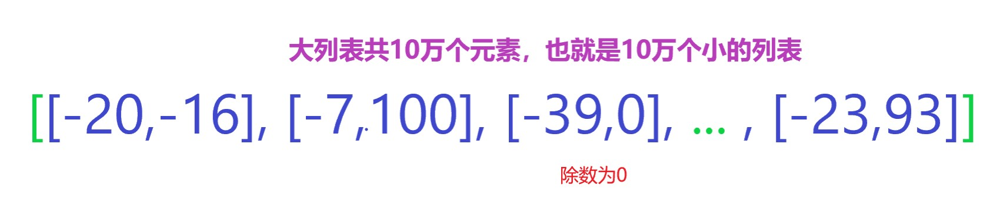
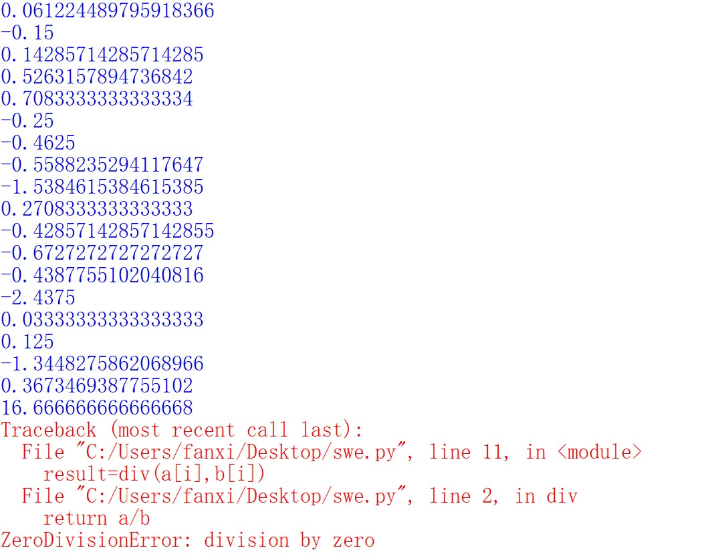
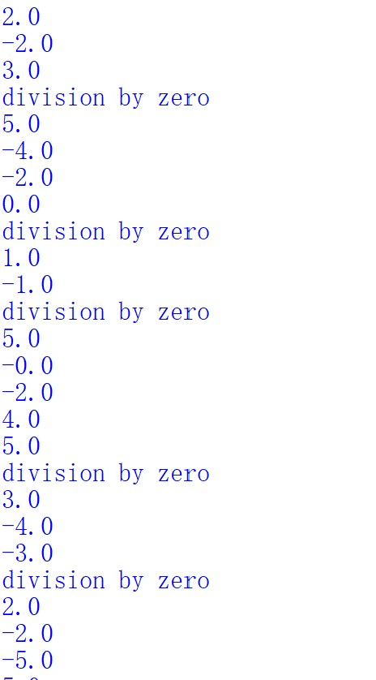

开篇 本期介绍Python的异常处理方法。
为什么需要做异常处理 看下面的函数：
1 2 def div (a,b ): return a/b
这个函数用于求解两数相除的结果
我们可以调用它：
1 2 3 4 5 6 7 8 >>> div(1 ,2 )0.5 >>> div(3 ,4 )0.75
程序貌似没问题
但是我们知道，除数是不能为0的，现在来尝试让除数为0：
1 2 3 4 5 6 7 >>> div(1 ,0 )Traceback (most recent call last): File "<pyshell#2>" , line 1 , in <module> div(1 ,0 ) File "C:/Users/fanxi/Desktop/swe.py" , line 2 , in div return a/b ZeroDivisionError: division by zero
毫无疑问，程序报错了！
报错信息也很明显：ZeroDivisionError: division by zero
我们的除数为0，所以报错。
你可能会说：那就控制除数不为0就好了呀，每次计算时都不要让除数为0，这样就不会出错了。
可以，但是，对于大量待计算对的数据来说，人为控制是不现实的，因为数据量太大。
比如将被除数与除数组成一个列表，作为一个整体元素[被除数，除数]，总共10万个这样的小列表，将它们一起嵌套在一个大列表中。
就像下面这样：

其中的被除数与除数均是如下方式随机生成的：
1 2 3 4 5 import randoma=random.randint(-50 ,50 ) b=random.randint(-100 ,100 )
现在将上面的叙述写成代码：
1 2 3 4 5 6 7 8 9 10 11 12 13 14 15 def div (a,b ): return a/b import randoma=[random.randint(-50 ,50 ) for i in range (100000 )] b=[random.randint(-100 ,100 ) for i in range (100000 )] for i in range (100000 ): result=div(a[i],b[i]) print (result)
刚开始程序正常执行并打印计算结果：
但是在执行若干步之后，会遇到除数为0的情况，程序立马崩溃：

之后还有很多没有来的及计算，而我们希望能够完成全部的除法运算，因此，需要引入异常处理。
引入异常处理可以让程序即使出现了除数为0，也不会中断，而是可以继续执行后面的除法运算，最终完成全部的计算。
那怎么实现呢？
别着急，接下来就看一下异常处理的方法~
如何实现异常处理 最简单的是使用try..except...
还是用除法的例子，我们引入异常处理，为了方便观察，我们把随机整数的生成区间改小，代码可以这样写：
1 2 3 4 5 6 7 8 9 10 11 12 13 14 15 16 def div (a,b ): try : return a/b except : return '有错误，自动忽略本条计算' import randoma=[random.randint(-5 ,5 ) for i in range (100000 )] b=[random.randint(-1 ,1 ) for i in range (100000 )] for i in range (100000 ): result=div(a[i],b[i]) print (result)
运行上述代码，当遇到除数为0，将打印’有错误，自动忽略本条计算’，程序并不会崩溃，而会继续向下执行：
你可能会发现，上面的异常处理方式只是告诉我们有错误，但是具体是什么错误呢？
可以使用多个except语句来设置遇到相应错误之后的提示信息。
那具体怎么操作呢？
先别着急，在学习这个之前，你首先需要了解Python内置的错误类型：
1 2 3 4 5 6 7 ZeroDivision Error FileNotFoundError FileExistsError ValueError KeyError SyntaxError IndexError
我们刚刚遇到的就是第一个错误：ZeroDivision Error
现在设置两个错误类型，看一下会不会如我们所想那样报“除数为0”的错误：
1 2 3 4 5 6 7 8 9 10 11 12 13 14 15 16 17 18 def div (a,b ): try : return a/b except SyntaxError: return '语法错误' except ZeroDivisionError: return '除数为0，忽略本条计算' import randoma=[random.randint(-5 ,5 ) for i in range (100000 )] b=[random.randint(-1 ,1 ) for i in range (100000 )] for i in range (100000 ): result=div(a[i],b[i]) print (result)
输出结果：
没错，报错信息指向ZeroDivisionError。
当然，except之后的报错信息也可以不自己指定，此时如果发生了相应的异常，会打印出Python自带的异常提示信息，也就是最开始看到的division by zero：
1 2 3 4 5 6 7 8 9 10 11 12 13 14 15 16 17 18 def div (a,b ): try : return a/b except SyntaxError: return '语法错误' except ZeroDivisionError as e: return e import randoma=[random.randint(-5 ,5 ) for i in range (100000 )] b=[random.randint(-1 ,1 ) for i in range (100000 )] for i in range (100000 ): result=div(a[i],b[i]) print (result)
此时的输出结果如下：

以上便是try...except...的基本用法。
你还可以指定在程序不发生异常，也就是正常运行结束（一次也不执行except中的语句）之后的动作，这会用到try...except...else...。
还是举个除法的栗子:
1 2 3 4 5 6 7 8 9 def div (a,b ): try : print (a/b) except SyntaxError: print ('语法错误' ) except ZeroDivisionError as e: print (e) else : print ('程序正常结束，这太棒啦！' )
开始调用：
1 2 3 4 5 6 >>> div(1 ,2 )0.5 程序正常结束，这太棒啦！ >>> div(2 ,3 )0.6666666666666666 程序正常结束，这太棒啦！
此时，除数不为0，程序正常结束运行，最后执行else中的语句。
而如果除数为0，那else后的语句将不会被执行：
1 2 >>> div(12 ,0 )division by zero
你可能还会想：在引入异常处理后，不管程序是正常运行结束，还是产生了异常而执行了except中的对应语句，我都希望在程序最终结束时执行一些指定的语句，这个应该怎么办呢？
简单！Python提供了finally关键字，在其后面书写你指定的代码语句即可，这些代码总是在程序结束（无论是否产生异常）后自动运行。接着看除法的栗子：
1 2 3 4 5 6 7 8 9 10 11 12 def div (a,b ): try : print (a/b) except SyntaxError: print ('语法错误' ) except ZeroDivisionError as e: print (e) else : print ('程序正常结束，这太棒啦！' ) finally : print ('程序运行结束。' )
我们设置了finally，此时无论程序如何结束运行，都会在最后打印 ‘程序运行结束。’
1 2 3 4 5 6 7 8 9 >>> div(1 ,2 )0.5 程序正常结束，这太棒啦！ 程序运行结束。 >>> div(2 ,0 )division by zero 程序运行结束。
以上便是异常处理的基本方式，掌握这些已经能满足一般的需求了。